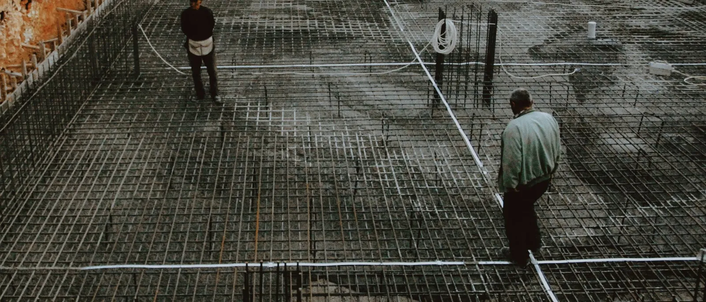

Pakalpojums 02
Būvuzraudzība
Pārstāvam pasūtītāju būvlaukumā: pārbaudām, vai darbi atbilst projektam un normatīviem, pieņemam segtos darbus un fiksējam defektus.
UzrakstītKas ietilpst
Ko pārbaudām objektā
Konkrētais darba apjoms tiek noteikts vienojoties, atkarībā no objekta un tā posma.
Pārbaudes pirms aizsegšanas
Pamati un armatūra, sienas un pārsegumi, jumta konstrukcija, inženiertīkli: tos pārbaudām, pirms darbi tiek aizsegti.
Atbilstība projektam un normatīviem
Salīdzinām veiktos darbus ar būvprojektu, būvnormatīviem un būvatļaujas nosacījumiem.
Būvdarbu žurnāls
Pārbaudām ierakstus būvdarbu žurnālā un parakstām tos, kad darbi atbilst projektam.
Segto darbu akti
Piedalāmies segto darbu pieņemšanā un parakstām aktus kopā ar būvnieku un atbildīgajiem speciālistiem.
Materiālu dokumenti
Pārbaudām materiālu un konstrukciju atbilstības dokumentus pirms to iestrādes.
Defektu uzskaite
Fiksējam defektus un neatbilstības rakstiski, nosakām termiņus un pārbaudām, ka tie novērsti.
Pieņemšana ekspluatācijā
Piedalāmies būves pieņemšanā un pārbaudām izpilddokumentāciju pirms nodošanas.
Kā notiek darbs
Četri soļi
- 01
Vienošanās
Vienojamies par uzraudzības apjomu, apmeklējumu biežumu un to, kādos darbos mums jābūt klāt.
- 02
Dokumentu izskatīšana
Izskatām būvprojektu, būvatļauju un darbu grafiku, lai zinātu, ko un kad pārbaudīt.
- 03
Pārbaudes objektā
Apmeklējam objektu saskaņā ar vienošanos, pārbaudām darbus, parakstām žurnālu un segto darbu aktus.
- 04
Pieņemšana
Sagatavojam defektu sarakstu, pārbaudām tā izpildi un piedalāmies būves pieņemšanā ekspluatācijā.

Kam tas domāts
Tiem, kas vēlas pārbaudi
Pasūtītājiem ar savu būvnieku
Ja būvējat ar darbuzņēmēju un vēlaties neatkarīgu pārbaudi, uzraugām darbus jūsu interesēs.
Tiem, kas nevar būt objektā
Ja dzīvojat citur vai esat aizņemti, apmeklējam objektu un ziņojam par darbu gaitu un problēmām.
Pircējiem pirms jaunas ēkas pieņemšanas
Ja pērkat jaunu ēku no attīstītāja, pārbaudām darbus un dokumentus pirms pieņemšanas.
Pastāstiet par objektu
Uzrakstiet, kas tiek būvēts, kur un kurā posmā ir darbi. Atbildēsim ar priekšlikumu.